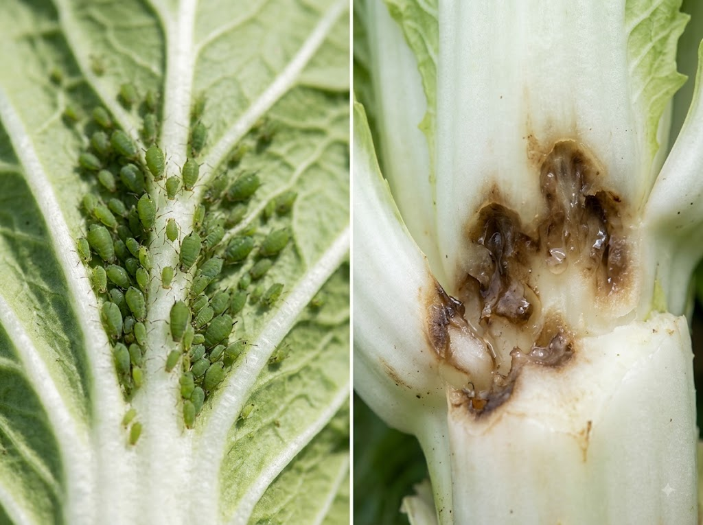
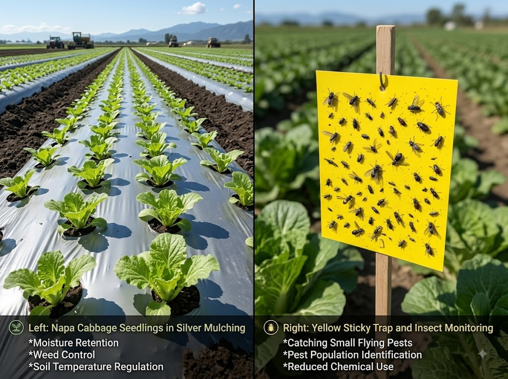

8월 중순~9월에 정식(아주심기)하는 김장배추는 초기부터 무름병과 진딧물에 취약합니다. 뒤늦게 발견하면 속잎이 다 녹아내리거나 바이러스가 번지는 피해로 이어집니다. 정식 후 언제 무엇을 뿌려야 하는지, 친환경 방제와 농약 방제 각각의 방법을 함께 정리했습니다.
무름병(연부병, 軟腐病)은 세균(에르위니아속 Erwinia 등)이 배추 조직을 분해해 물러지게 하는 병입니다. 처음에는 겉잎 기부나 뿌리 근처에서 작은 물빠진 수침 반점으로 시작해, 진행되면 조직이 녹으면서 고약한 냄새를 풍깁니다. 속 전체가 썩어 들어가면 수확이 불가능합니다.
발생 조건: 무름병은 고온다습한 환경에서 빠르게 퍼집니다. 8~9월 우기·장마 잔재 기간에 배수가 불량한 밭이나 비 뒤에 흙이 오래 젖어 있는 조건에서 특히 많이 발생합니다. 또한 지나친 질소 비료 투입, 밀식 재배, 해충(굼벵이·민달팽이 등)의 기계적 상처를 통해 세균이 침입하는 경우도 많습니다.
진딧물(배추진딧물·복숭아혹진딧물 등)은 배추 잎 뒷면에 집단으로 기생하며 즙을 빨아 먹습니다. 진딧물 자체의 흡즙 피해도 문제지만, 더 큰 문제는 바이러스 매개입니다. 순무모자이크바이러스(TuMV) 등을 옮겨 배추가 기형화되거나 고사하는 피해를 일으킵니다.
진딧물은 개체수가 적을 때 조기에 방제하지 않으면 단기간 내 기하급수적으로 늘어납니다. 특히 9월 기온이 내려가기 전 20~25℃ 온난한 시기에 번식이 왕성합니다.
초기 증상: 잎 뒷면에 1~2mm 크기의 초록색·노란색 작은 벌레가 무리 지어 붙어 있음. 잎 표면에 끈적끈적한 감로(진딧물 배설물)가 묻어 반짝이기도 합니다. 이 감로에는 그을음병 균이 2차 발생할 수 있습니다.

김장배추는 중부 기준으로 8월 15일~25일 사이에 정식하는 것이 일반적입니다(남부는 9월 초까지 가능). 정식 후 방제 일정을 단계별로 정리하면 다음과 같습니다.
| 시기 | 방제 대상 | 주요 방제법 | 비고 |
|---|---|---|---|
| 정식 직전 | 토양 해충(굼벵이, 뿌리파리 유충) | 토양 살충제 혼입 또는 미생물 제제 | 무름병 침입 경로 사전 차단 |
| 정식 후 3~5일 | 진딧물 초기 예방 | 은박 반사 멀칭, 끈끈이 트랩 설치 | 약제 전에 물리적 방제 선행 |
| 정식 후 1~2주 | 진딧물 초기 발생 | 친환경: 목초액 희석액 / 약제: 피레스로이드계 살충제 | 잎 뒷면 중심으로 충분히 살포 |
| 정식 후 2~4주 | 무름병 예방 | 동수화제(석회보르도액) 또는 동제 계통 약제 / 친환경: 구리 함유 천연 방제 | 비 전후 살포 효과 높음 |
| 장마·비 후 즉시 | 무름병 확산 차단 | 병든 포기 즉시 제거(비닐봉지에 담아 폐기), 주변 토양 석회 처리 | 발병 포기 방치 금지 |
| 결구 시작 전 | 진딧물 재발, 무름병 감염 | 약제 교호 살포(저항성 방지), 결구 후 안전일수 준수 필수 | 수확 전 안전일수 꼭 확인 |
무름병은 예방이 치료보다 훨씬 효과적입니다. 세균이 일단 조직 내부로 들어가면 살균제로 완치하기 어렵습니다.
배수 관리: 이랑을 높게 만들고(두둑 높이 20cm 이상 권장), 비 후 고이는 물이 빠르게 빠질 수 있도록 이랑 사이 배수로를 정비합니다.
과습 주의: 관수 시 과도하게 물을 주거나, 잎이 오래 젖은 상태가 되지 않도록 주의합니다. 가능하면 오전에 관수해 낮 동안 증발이 이뤄지도록 합니다.
밀식 금지: 포기 간격이 너무 좁으면 통풍이 나빠져 무름병 발생이 쉬워집니다. 표준 재식 간격(30~35cm)을 준수하세요.
질소 과용 자제: 질소 비료를 많이 쓰면 조직이 연약해져 병원균 침입이 쉬워집니다. 퇴비 위주로 베이스 시비하고 질소 비율이 낮은 복합 비료를 사용하세요.
무름병에 효과 있는 약제로는 동제(구리 함유 약제) 계통(예: 동수화제, 수산화동 제제)이 대표적으로 사용됩니다. 발병 초기 또는 비가 오기 전 예방적으로 살포할 때 효과가 좋습니다. 사용 전 반드시 해당 제품의 희석 배수·안전일수를 확인하고, 등록 작물(배추) 해당 여부도 확인하세요.
진딧물은 조기 발견 시 친환경 방법으로 충분히 억제할 수 있습니다.
은박 멀칭: 이랑 위에 은색 반사 멀칭 필름을 깔면 햇빛이 반사되어 진딧물이 싫어합니다. 정식 전에 깔아 두는 것이 가장 효과적입니다.
끈끈이 트랩: 노란색 끈끈이 트랩을 이랑 사이에 꽂아 두면 진딧물(유시충)과 해충을 포획할 수 있습니다. 밀도 모니터링에도 유용합니다.
목초액 희석액: 목초액(원액)을 200~500배 희석해 잎 뒷면을 중심으로 분무합니다. 살충력보다는 기피 효과가 주이므로, 발생 초기 또는 예방 목적으로 적합합니다.
강한 물줄기: 진딧물 군집이 작을 때, 물을 강하게 뿌려 물리적으로 떨어뜨리는 방법도 임시 효과가 있습니다. 단, 이 방법으로 완전 방제는 어렵습니다.
개체수가 많거나 친환경 방법으로 억제가 안 될 때는 등록 살충제를 사용합니다. 진딧물에 효과 있는 성분으로는 피레스로이드계, 네오니코티노이드계 등이 있으며, 각 제품의 등록 작물(배추) 여부와 안전일수를 반드시 확인해야 합니다.
살포 시에는 잎 뒷면이 충분히 젖도록 약액이 닿게 하는 것이 핵심입니다. 진딧물은 주로 잎 뒷면 잎맥 옆에 군집하기 때문에 위에서만 뿌리면 약효가 떨어집니다.

무름병에 걸린 포기는 발견 즉시 뽑아서 밭 밖으로 제거해야 합니다. 밭 안에 그냥 두면 세균이 빗물·관개수를 타고 주변 포기로 퍼집니다.
제거한 포기는 반드시 비닐봉지에 밀봉해 생활 쓰레기로 배출하거나, 밭과 멀리 떨어진 곳에 깊게 매립합니다. 퇴비화하거나 밭 모서리에 쌓아 두는 것은 금물입니다.
병든 포기를 제거한 자리의 토양에는 생석회(산화석회)를 뿌려 pH를 높여 세균 번식을 억제하는 방법이 효과적입니다. 주변 2~3포기는 예방적으로 동제 약액을 살포해 2차 감염을 차단합니다.
농약 사용을 최소화하고 싶은 텃밭 재배자라면 다음 방법을 참고하세요.
목초액 방제: 200~500배 희석액을 1주일에 1~2회 잎 전면·후면에 살포. 기피 효과와 미약한 살균·살충 효과 있음.
마늘·고추 추출액: 마늘 100g, 고추 10개를 물 2L에 끓인 뒤 식혀 거른 것을 200배 희석해 살포. 민간 기피제로 사용.
님 오일(Neem oil): 인도 님 나무 추출 오일 제제로, 진딧물·나방류 유충에 효과적인 친환경 방제제. 물에 희석해 유화제(주방 세제 2~3방울)와 섞어 사용.
유기 동제: 친환경 농자재로 승인된 동(구리) 함유 제품. 무름병 예방에 효과적이며 유기농 인증 작목에서도 일정 기준 내 사용 가능.
친환경 방제는 효과가 빠르게 나타나지 않으므로, 발생 초기에 더욱 적극적으로 대처해야 합니다. 발생이 심해지면 등록 농약으로 전환이 필요할 수 있습니다.